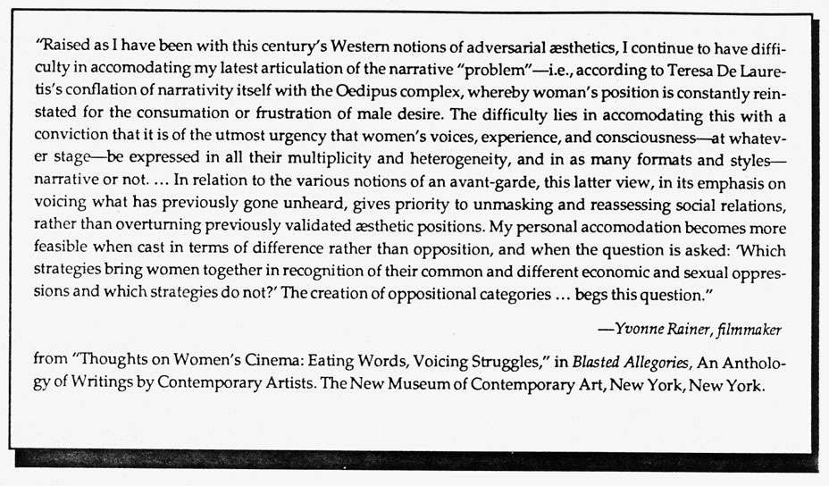

.endnotes
Editor's Notes "When knowledge in the body starts to cross over" (Mei-mei Berssenbrugge's line from Kate's Talk, p. 10) suggests, among many things, the tension of approaching and breaking and entering the new. Claiming that which has been prohibited by previously established category, æsthetic demarcation. Negotiation with something only apprehended. That moment when the unsaid may finally speak. . . .Thus the necessity of crossover between such isolated identities as body and video, movement and word, poem and prose, "creative" work and "critical" work. • Important books just out or about to appear: New York,
newly collected essays by Djuna Barnes, written between 1913 and the 1920s, due late spring from Sun & Moon; Fanny Howe's newest collection of poems, The Vineyard,
from Lost Roads Publishers, and a new novel, also by Howe, The Deep North,
from Sun & Moon; a long-awaited collection of poems, Mezza-Voce,
by the French writer Anne-Marie Albiach, translated into "American English" by Joseph Simas, in collaboration with Albiach, Lydia Davis, Anthony Barnett and Douglas Oliver, from the Post-Apollo Press; Wild Meat,
new poems by Carolyn Beard Whitlow, Lost Roads; collected short fictions of Myra Sklarew, Like a Field Riddled by Ants,
from Lost Roads; Gertrude Stein and the Making of Literature,
edited by Shirley Neuman and Ira B. Nadel, Macmillan Press; Writing for their Lives, the Modernist Women 1910-1940,
by Gillian Hanscombe and Virginia L. Smyers; Shorter American Memory
by Rosmarie Waldrop, from Paradigm Press, a book of short prose pieces; and, finally, The Europe of Trusts,
an essential collection of Susan Howe's major books of poems in one volume, from Sun & Moon. 
|